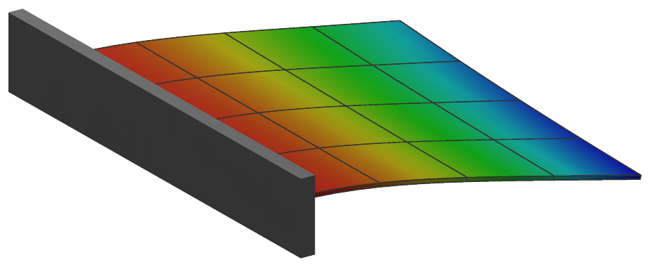

ObjectANCFThinPlate
OBJECT UNDER CONSTRUCTION: A 3D thin Kirchhoff plate finite element based on the absolute nodal coordinate formulation, using 4 nodes of type NodePointSlope12. The geometry as well as (deformed and distorted) reference configuration is given by the nodes. The localPosition follows unit-coordinates in the range [-1,1] for X, Y and Z coordinates; the thickness of the plate is h; This element is under construction.


Interface
Nodes it takes: NodePointSlope12
Body markers that can be placed on it: MarkerBodyMass, MarkerBodyPosition
Parameters
The parameters of the item; in a dictionary, its type is ‘ANCFThinPlate’:
name |
type |
size |
default |
description |
|---|---|---|---|---|
name |
String |
‘’ |
objects’s unique name |
|
thickness |
NumpyVector |
[] |
(symbol: \(h\)) [SI:m] thickness of the plate: one value for a constant thickness; 4 values, the thicknesses at the nodes in their order, interpolated bilinearly; or 12 values \([h_0,\, h_{,s,0},\, h_{,t,0},\, \ldots,\, h_3,\, h_{,s,3},\, h_{,t,3}]\), the thickness and its gradients along the slopes of each node, interpolated with the 12 shape functions of the position; with 4 or 12 values, the stiffness is computed from the local thickness, see strainCoefficients |
|
density |
UReal |
0. |
(symbol: \(\rho\)) [SI:kg/m\(^3\)] density of the plate, possibly averaged over thickness |
|
massProportionalDamping |
Real |
0. |
mass-proportional damping coefficient \(\alpha\) [SI:1/s]; adds massmatrix proportional damping forces \(\fv_d = \alpha \Mm \dot{\qv}\) |
|
stiffnessProportionalDamping |
Real |
0. |
membrane stiffness-proportional damping coefficient \(\beta_\varepsilon\) [SI:s]: Kelvin-Voigt damping \(\beta_\varepsilon\, \Dm_\varepsilon\, \dot\teps\) added to the membrane forces, in the current configuration; it does not damp a rigid-body motion |
|
bendingStiffnessProportionalDamping |
Real |
-1. |
bending stiffness-proportional damping coefficient \(\beta_\kappa\) [SI:s]: Kelvin-Voigt damping \(\beta_\kappa\, \Dm_\kappa\, \dot\tkappa\) added to the bending moments; if negative (default), \(\beta_\varepsilon\) of stiffnessProportionalDamping is used, 0 switches it off |
|
strainCoefficients |
Matrix3DList |
[] |
(symbol: \(\Dm_\varepsilon\)) [SI:N/m] stiffness coefficients related to inplane normal and shear strains, integrated over height of the plate, as a list of 3D matrices; for a constant thickness one matrix; for 4 or 12 thickness values, the first matrix divided by thickness[0] is the material matrix of a homogeneous isotropic plate, \(\Dm_\varepsilon = \Dm_b\, h\) and \(\Dm_\kappa = \Dm_b\, h^3/12\) at each point, and further matrices are not used |
|
curvatureCoefficients |
Matrix3DList |
[] |
(symbol: \(\Dm_\kappa\)) [SI:Nm] stiffness coefficients related to curvatures, integrated over height of the plate, as a list of 3D matrices; used for a constant thickness (one matrix); for 4 or 12 thickness values \(\Dm_\kappa\) follows from strainCoefficients and the local thickness |
|
slopesScalingX |
Vector4D |
4 |
[-1.,-1.,-1.,-1.] |
scaling of x-slopes at each element node; flat elements: half of the side length of the element; curved: optimal values such that curved geometry is best approximated; if negative (default) values are used, length is computed from node distances. |
slopesScalingY |
Vector4D |
4 |
[-1.,-1.,-1.,-1.] |
scaling of y-slopes at each element node; flat elements: half of the side length of the element; curved: optimal values such that curved geometry is best approximated; if negative (default) values are used, length is computed from node distances. |
nodeNumbers |
NodeIndex4 |
4 |
[invalid (-1), invalid (-1), invalid (-1), invalid (-1)] |
4 NodePointSlope12 node numbers, with local (xi,eta) coordinates as [(-1,-1),(1,-1),(1,1),(-1,1)] |
useReducedOrderIntegration |
Index |
0 |
integration of the virtual work: 0 - Gauss 5 x 5 points for the membrane and the bending terms; 1 - Lobatto 3 x 3 points for the membrane and Gauss 2 x 2 for the bending terms (disjoint points, against membrane locking); 2 - the same as 1 |
|
visualization |
VObjectANCFThinPlate |
parameters for visualization of item |
Renamed parameters, still taken with a DeprecationWarning: physicsThickness (deprecated since 1.12.258, removed in 2031): use thickness; physicsDensity (deprecated since 1.12.258, removed in 2031): use density; physicsMassProportionalDamping (deprecated since 1.12.258, removed in 2031): use massProportionalDamping; physicsStrainCoefficients (deprecated since 1.12.258, removed in 2031): use strainCoefficients; physicsCurvatureCoefficients (deprecated since 1.12.258, removed in 2031): use curvatureCoefficients.
Visualization parameters
The parameters of VObjectANCFThinPlate, given as visualization:
name |
type |
size |
default |
description |
|---|---|---|---|---|
show |
Bool |
True |
set true, if item is shown in visualization and false if it is not shown; the plate is drawn as n x n quads per element, n = bodies.beams.axialTiling/2, at least 2, on its surfaces if it has a thickness; the outline of the element is drawn as lines if view0.scene.showMeshEdges is set when the graphics data is built (the curved surface is drawn as flat quads, so the renderer cannot find the element edges itself) |
|
color |
Float4 |
4 |
[-1.,-1.,-1.,-1.] |
RGBA color of the object; if R==-1, use default color |
Drawing
Drawn as all finite elements; the mid surface, or with bodies.shells.drawSolid both surfaces and the edges at bodies.shells.thicknessFactor times the thickness, as n x n quads per element, n = bodies.shells.inPlaneTiling, at least 2; the outline of the element as lines with view0.scene.showMeshEdges. The contour at the thickness coordinate bodies.shells.contourZeta on the top, its negative on the bottom; with bodies.shells.reducedInterpolation the strain-type outputs interpolated bilinearly from the corners of the element; with bodies.shells.drawNormal the contour value along the normal of the mid surface as lines.
Settings beyond those of all finite elements: bodies.shells.contourZeta, bodies.shells.drawNormal, bodies.shells.drawNormalColor, bodies.shells.drawNormalFactor, bodies.shells.drawNormalLines, bodies.shells.drawSolid, bodies.shells.inPlaneTiling, bodies.shells.reducedInterpolation, bodies.shells.thicknessFactor, contour.nodesColored, openGL.faceEdgesColor, view0.scene.showMeshEdges.
Output variables
Available as OutputVariableType in sensors, Get...Output() and other functions:
output variable |
symbol |
description |
|---|---|---|
Position |
\(\LU{0}{\pv\cConfig(x,y,z)}\) |
global position vector of local position \([x,y,z]\) |
Displacement |
\(\LU{0}{\uv\cConfig(x,y,z)} = \LU{0}{\pv\cConfig(x,y,z)} - \LU{0}{\pv\cRef(x,y,z)}\) |
global displacement vector of local position |
Velocity |
\(\LU{0}{\vv(x,y,z)} = \LU{0}{\dot \rv(x,y,z)}\) |
global velocity vector of local position |
Director1 |
\(\rv_x(x,y,z)\) |
(axial) slope vector of local position (at \(z\)=0) |
Director2 |
\(\rv_y(x,y,z)\) |
(axial) slope vector of local position (at \(z\)=0) |
StrainLocal |
\([\varepsilon_{11},\, \varepsilon_{22},\, 0,\, 0,\, 0,\, \gamma_{12}]\tp\) |
strains at the thickness coordinate \(\zeta\) of the local position, \(\teps - \zeta\,\frac{h}{2}\,\tkappa\), relative to the reference configuration |
CurvatureLocal |
\([\kappa_{xx},\, \kappa_{yy},\, \kappa_{xy}]\tp\) |
curvatures of the mid-surface relative to the reference configuration, positive where the surface bends towards its normal |
ForceLocal |
\([N_{xx},\, N_{yy},\, N_{xy}]\tp\) |
membrane force resultants per length in the local frame, from the membrane strains relative to the reference configuration |
TorqueLocal |
\([M_{xx},\, M_{yy},\, M_{xy}]\tp\) |
bending moment resultants per length in the local frame, \(\mathbf{M} = \Dm_\kappa \tkappa\), from the curvatures relative to the reference configuration |
StressLocal |
\([\sigma_{11},\, \sigma_{22},\, 0,\, 0,\, 0,\, \sigma_{12}]\tp\) |
stresses at the thickness coordinate \(\zeta\) of the local position, \(\mathbf{N}/h - \zeta\, 6\mathbf{M}/h^2\); without damping |
Acceleration |
\(\LU{0}{\av(x,y,z)} = \LU{0}{\ddot \rv(x,y,z)}\) |
global acceleration vector of local position |
KineticEnergy |
\(T = \frac{1}{2} \dot\qv\tp \Mm\, \dot\qv\) |
kinetic energy from the mass matrix of the current state and the velocities of the nodes; current configuration only; localPosition must be \([0,0,0]\) |
PotentialEnergy |
\(V = \frac{1}{2}\int_A \teps\tp \mathbf{N} + \tkappa\tp \mathbf{M}\, dA\) |
elastic energy of the membrane strains and curvatures relative to the reference configuration, with the membrane forces \(\mathbf{N}\) and moments \(\mathbf{M}\) and the integration rule of the elastic forces; localPosition must be \([0,0,0]\) |
Detailed description
This element is under construction, as its class description says.
Nodes and coordinates
Four nodes of type NodePointSlope12, each with a position and the two in-plane slopes; 36
coordinates. The local coordinates \((\xi,\,\eta) \in [-1,1]^2\) place node 0 at \((-1,-1)\), node 1 at
\((1,-1)\), node 2 at \((1,1)\) and node 3 at \((-1,1)\); the thickness coordinate \(\zeta\) is in \([-1,1]\) as well.
Kinematics and interpolation
The position of the mid-surface is interpolated with 12 shape functions of the
Adini-Clough-Melosh type - cubic Hermite in each direction, from the positions and slopes of the
four nodes -, and the slopes of a node are scaled by slopesScalingX and slopesScalingY, the
side lengths of a flat element by default. The derivatives with respect to \((\xi,\,\eta)\) are mapped to
the local frame of the reference configuration, \(\ev_1 \parallel \rv_{,\xi}\) and \(\ev_2 = \nv_0 \times \ev_1\), with
the inverse of the reference Jacobian \(\Am = \Jm_0^{-1}\).
Strains and elastic forces
Kirchhoff-Love plate: the Green-Lagrange strains of the mid-surface, \(\teps = [\frac{1}{2} \rv_{,x}\tp \rv_{,x},\; \frac{1}{2} \rv_{,y}\tp \rv_{,y},\; \rv_{,x}\tp \rv_{,y}]\tp\), and the curvatures of the material measure, with \(\nv_3 = \rv_{,x} \times \rv_{,y}\),
each relative to the reference configuration. For a strip, \(\kappa_{xx}\) is the curvature of ObjectANCFCable2D, and
pure bending gives no membrane strain. The membrane forces \(\mathbf{N} = \Dm_\varepsilon \teps\) and the moments
\(\mathbf{M} = \Dm_\kappa \tkappa\) do virtual work in two separate integrals, whose points useReducedOrderIntegration
chooses: 0 - Gauss \(5 \times 5\) for both; 1 - Lobatto \(3 \times 3\) for the membrane and Gauss \(2 \times 2\) for the bending
(disjoint points, against membrane locking, after Ntarladima, Pieber and Gerstmayr 2023); 2 - the same as 1.
The thickness is constant (one value), bilinear in \((\xi,\,\eta)\) from 4 nodal values, or interpolated from 12 values -
a thickness and its two gradients per node - with the 12 shape functions of the position. With 4 or 12 values the
stiffness follows the local thickness, \(\Dm_\varepsilon = \Dm_b\, h\) and \(\Dm_\kappa = \Dm_b\, h^3/12\) with
\(\Dm_b\) = strainCoefficients[0]/thickness[0]: a homogeneous isotropic plate.
Mass matrix and damping
The mass matrix is constant (Gauss \(5 \times 5\)). Mass-proportional damping adds \(\fv_d = \alpha \Mm \dot\qv\); Kelvin-Voigt damping adds \(\beta_\varepsilon \Dm_\varepsilon \dot\teps\) to the membrane forces and \(\beta_\kappa \Dm_\kappa \dot\tkappa\) to the moments, evaluated in the current configuration, so that it does not damp a rigid-body motion. The Jacobian is computed by automatic differentiation with respect to the coordinates and, for the damping, the velocities.
Outputs through the thickness
At \(\zeta \in [-1,1]\): StrainLocal \(= \teps - \zeta\,\frac{h}{2}\,\tkappa\) and StressLocal
\(= \mathbf{N}/h - \zeta\, 6\mathbf{M}/h^2\), both as 6 components \([\cdot_{11},\, \cdot_{22},\, 0,\, 0,\, 0,\, \cdot_{12}]\);
ForceLocal \(= [N_{11},\, N_{22},\, N_{12}]\) per length, TorqueLocal \(= [M_{11},\, M_{22},\, M_{12}]\) and
CurvatureLocal \(= [\kappa_{xx},\, \kappa_{yy},\, \kappa_{xy}]\). A curvature is positive where the surface bends
towards its normal \(\nv_3\), and \(\zeta = 1\) is the side of the normal: for a strip whose normal points in \(+z\) the
signs of ObjectANCFCable2D, \(\kappa = w''\) and \(\varepsilon = \varepsilon_m - y\,\kappa\).
Limitations
Under construction; for output variables, the local position is given in \([-1,1]^3\). The gradients of the 12
thickness values are per unit length along the slopes of the nodes; the thickness function of ShellMesh gives
them so.
Mini example
#a square plate of 2x2 ANCF thin plate elements, clamped at one edge, under its own weight
from exudyn.shells import ShellMesh
plate = ShellMesh(vertices=[[0,0,0],[1,0,0],[1,1,0],[0,1,0]], numberOfElementsX=2, numberOfElementsY=2,
youngsModulus=2e9, poissonsRatio=0, density=1000, thickness=0.01)
plate.CreateANCFThinPlateElements(mbs) #adds ObjectANCFThinPlate elements on NodePointSlope12 nodes
for node in plate.boundaryNodeNumbers['left']:
mNode = mbs.AddMarker(MarkerNodeRigid(nodeNumber=node))
mbs.AddObject(ObjectJointGeneric(markerNumbers=[mbs.AddMarker(MarkerBodyRigid(bodyNumber=oGround,
localPosition=mbs.GetNodeOutput(node, exu.OutputVariableType.Position, exu.ConfigurationType.Reference))),
mNode]))
for element in plate.elementNumbers:
mbs.AddLoad(LoadMassProportional(markerNumber=mbs.AddMarker(MarkerBodyMass(bodyNumber=element)),
loadVector=[0,0,-9.81]))
mbs.Assemble()
mbs.SolveStatic()
#a corner of the free edge; compare q*L^4/(8*D) = 0.0736 of a cantilever strip, D = E*h^3/12
exu.sys['testResult'] = mbs.GetNodeOutput(plate.vertexNodeNumbers[1], exu.OutputVariableType.Displacement)[2]